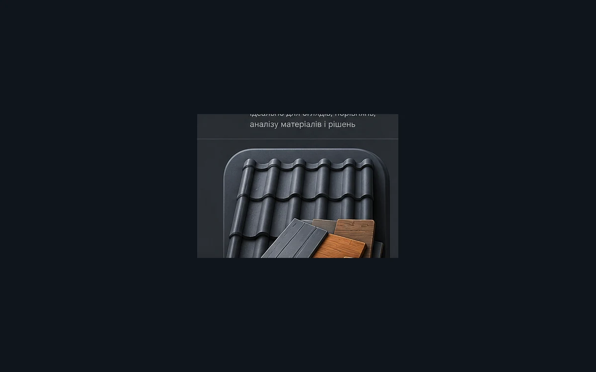
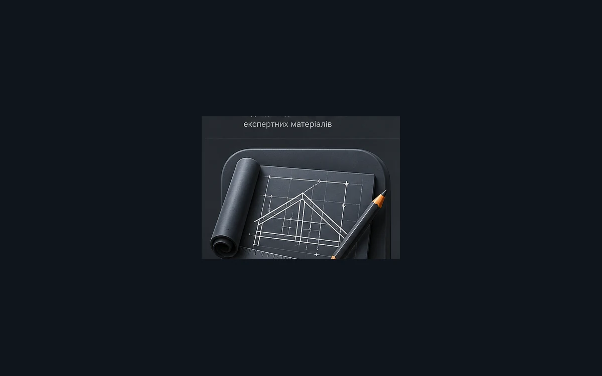
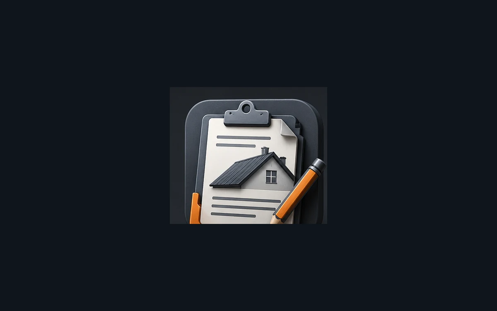
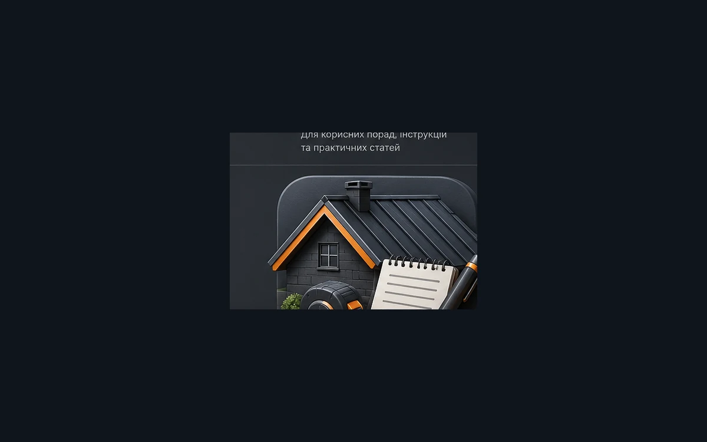
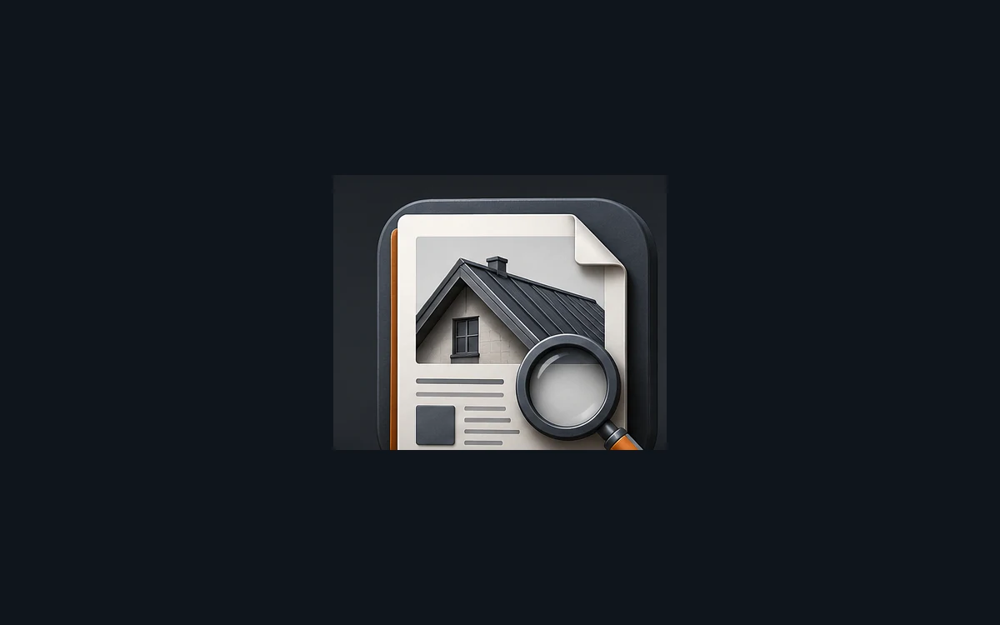
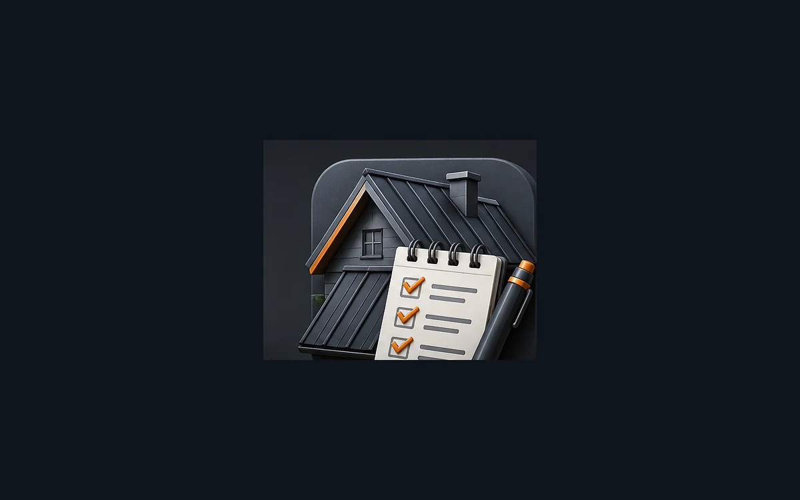

Як обрати покрівлю для приватного будинку
Критерії вибору покрівельного матеріалу для приватного будинку: форма даху, основа, утеплення, вузли та умови експлуатації.
Практичні матеріали про конструкцію покрівлі, складні вузли та вибір систем. Пріоритет - технічна користь, реальні об’єкти й зв’язок із послугами METROPLEX.

Критерії вибору покрівельного матеріалу для приватного будинку: форма даху, основа, утеплення, вузли та умови експлуатації.
Що потрібно врахувати перед монтажем металочерепиці: основа, мембрана, кріплення, примикання і вентиляція.
Порівняння металочерепиці та профнастилу для приватних, господарських і комерційних будівель.
Помилки монтажу металочерепиці, які призводять до пошкоджень, шуму, конденсату та пошкодження покриття.

Як працює фальцева покрівля, що таке картини і чому важливі рухомі кріплення та правильні примикання.
Огляд матеріалів для фальцевої покрівлі: оцинкована сталь, сталь з полімерним покриттям та інші варіанти.
Що означають висота профілю, товщина металу і захисне покриття профнастилу.
Підготовка основи, розкладка листів, нахлести, кріплення та добірні елементи при монтажі профнастилу.

Вимоги до суцільної основи під бітумну черепицю: рівність, зазори, вологість і вентиляція.
Особливості бітумної черепиці на дахах з ендовами, баштами, ламаними скатами та великою кількістю примикань.
Принцип роботи ПВХ-мембрани, механічне кріплення, зварювання швів та оформлення складних вузлів.
Як виконують воронки, парапети, внутрішні кути, труби та проходи обладнання на мембранній покрівлі.
Роль утеплювача, пароізоляції, гідрозахисту та вентиляції у скатній покрівлі.

Причини конденсату: волога з приміщення, розриви пароізоляції, холодні містки та недостатня вентиляція.
Де виникають містки холоду та як вони впливають на тепловтрати, конденсат і стан оздоблення.

Причини пошкоджень біля димоходу та основні елементи правильного примикання.
Як працює ендова, куди надходить вода та які помилки призводять до пошкоджень.
Як повітря проходить від карниза до коника і чому закриті канали призводять до вологи.
Роль пароізоляції в утепленому даху та вимоги до герметизації стиків, проходів і примикань.
Як жолоби, труби, воронки та ухили відводять воду від будівлі.
Огляд покрівлі після снігу, морозів і перепадів температур: покриття, кріплення, примикання та водостік.
Ознаки пошкодження покрівлі після вітру: зміщення елементів, ослаблення кріплень і дефекти крайових зон.
Пояснення шарів утепленої покрівлі та функції кожного матеріалу.

Чому різні матеріали мають обмеження за ухилом та як кут впливає на відведення води і снігу.
Покроковий огляд покрівлі після зими та вітру: покриття, кріплення, карнизи, водостоки, примикання і вентиляція.
На що звернути увагу перед купівлею будинку: стан покриття, деревини, утеплення, вентиляції та складних вузлів.
Як оцінюють старий дах перед заміною покриття, що перевіряють у кроквах, обрешітці та карнизних вузлах.
Які матеріали і вузли доречні для сезонного будинку, де важливі просте обслуговування, вентиляція і стійкість до вологи.
Профнастил, металочерепиця або мембранне покриття: як підібрати рішення для гаража, майстерні чи господарської споруди.
Особливості монтажу профнастилу на складських і виробничих будівлях: нахлести, кріплення, крайові зони і водовідведення.
Що врахувати при монтажі профнастилу на навісі: ухил, крок опор, напрям листів, кріплення і відведення води.
Колір покрівлі впливає на вигляд фасаду, сприйняття об’єму будинку і поєднання з водостоком, вікнами та оздобленням.
Чому товщина металу важлива, але не єдиний критерій: профіль, покриття, кріплення і якість монтажу працюють разом.
Огляд захисних покриттів для металевої покрівлі: стійкість до подряпин, ультрафіолету, вологи і механічних навантажень.
Коник має закривати верхню лінію скатів, не блокувати вентиляцію і захищати конструкцію від опадів та снігу.
Карниз визначає старт покриття, роботу вентиляції, захист краю даху і правильне потрапляння води в жолоб.
Де встановлюють снігозатримувачі, як вони пов’язані з ухилом скатів, проходами біля будинку і водостічною системою.
Жолоби, труби, воронки і кронштейни мають працювати разом із покрівлею та фасадом, а не як окрема деталь.
Мансардне вікно змінює роботу ската, тому важливі гідроізоляція, примикання, відведення води і утеплення навколо рами.
Проходи через покрівлю потребують правильного фартуха, герметизації, відступів і контролю руху води навколо вузла.
Ендови, примикання, проходи, карнизи і коники визначають довговічність скатної покрівлі не менше, ніж саме покриття.
Коли потрібен антиконденсатний шар, як він працює під металом і чому його не можна плутати з повноцінною мембраною.
Дифузійна мембрана захищає утеплювач і деревину, але має працювати разом із вентиляційним зазором та правильною укладкою.
Як обрешітка формує основу під покриття, а контробрешітка створює вентиляційний канал під покрівлею.
Ламані скати, башти, ендови і велика кількість примикань потребують окремого підходу до матеріалу і монтажу.
Перед новим монтажем важливо безпечно зняти старе покриття, оцінити деревину, вивезти матеріали і підготувати основу.
Що варто підготувати перед роботою на даху: доступ до об’єкта, місце для матеріалів, безпечні проходи і огляд конструкцій.
Огляд починається з геометрії даху, стану покриття, карнизів, водостоків, проходів, вентиляції та підпокрівельного простору.
Для складів, магазинів, СТО і виробничих будівель важливі технологія монтажу, водовідведення, проходи обладнання та доступ для обслуговування.
Мембранне покриття застосовують там, де важливі герметичні шви, акуратні примикання, проходи обладнання і контроль водовідведення.
Примикання до стіни має відвести воду від вертикальної поверхні, захистити шари покрівлі і зберегти рух матеріалів.